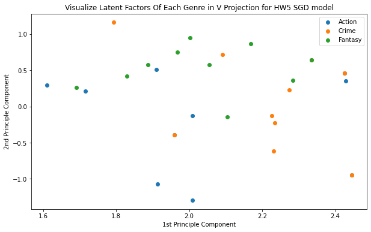

Deciding on the correct architecture to use is often very time consuming and often
a difficult balance between using enough parameters to obtain optimal performance
and not using too many such that overfitting occurs and computational power
is wasted. We have designed a framework to find the optimal architecture for
an application. Our Dynamic Neural Architecture Search uses a Reinforcement
Learning Controller to optimally adjust the network architecture during training.

Singular Value Decomposition (SVD) can be used to learn the relationship between two groups.
Then the learned patterns can be used to predict interactions between a new member of either
group and the other group members. Here we use SVD to learn the relationship between viewers
movie ratings and the movies themselves. This allows us to predict how a view will feel about
a movie based on previous responses.

Donec eget ex magna. Interdum et malesuada fames ac ante ipsum primis in faucibus. Pellentesque venenatis dolor imperdiet dolor mattis sagittis magna etiam.

Donec eget ex magna. Interdum et malesuada fames ac ante ipsum primis in faucibus. Pellentesque venenatis dolor imperdiet dolor mattis sagittis magna etiam.

Donec eget ex magna. Interdum et malesuada fames ac ante ipsum primis in faucibus. Pellentesque venenatis dolor imperdiet dolor mattis sagittis magna etiam.